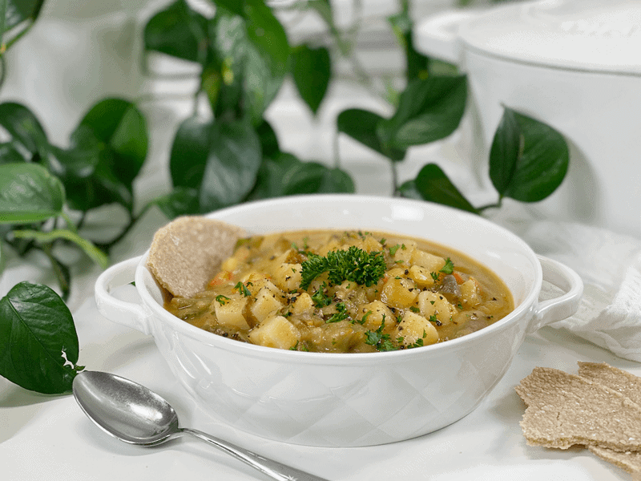
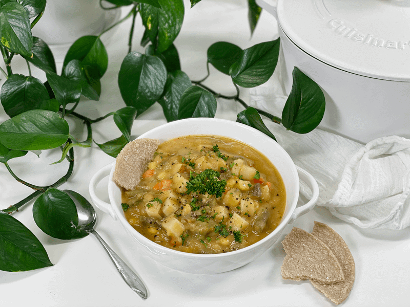

Chunky Russet Potato and Vegetable Soup | Oil-Free
Chunky Russet Potato and Vegetable Soup has a creamed cauliflower base that is loaded with rustic chunks of russet potatoes, corn, carrots, peas, and green beans. It’s a warm, filling, nutrient-packed soup that eats like a meal. To ramp up the nutrition in this soup I used miso instead of salt, and kombu seaweed to add a flavor of umami. I will explain the health benefits of those two ingredients further down in the post.

At first, this soup was destined to be in my End of the Week Soup Challenge, but I thought, “What the heck, I will write down what I put in it.” And I am thankful that I did. My End of Week Soup challenges are based on weekly leftovers, which was my intention, but instead it morphed into a recipe. We must have done really well eating up our prepared dishes, because I didn’t have much left to use up.
We’ve been having some good rainy days (such a blessing for our orchard) and a big bowl of soup sounded amazing. I served it with some Oat Tortillas, tearing them into pieces and dipping them into the soup. Ah yes, this was just what I needed. Before we dive into the recipe, allow me a minute of your time to go over a few key ingredients.
Ingredient Run-Down
Cauliflower
- Sometimes the bitterness of cauliflower can be overpowering. If you are sensitive to this, start by tasting the cauliflower that you plan on using. If it tastes bitter from the get-go it can be a sign that the cauliflower was exposed to too much sun while growing.
- Be careful that you don’t overcook the cauliflower. Check the “doneness” of cauliflower by pricking it with a fork a few minutes, which is referred to as “fork-tender.” When overcooked, it releases sulfurous compounds that produce an unpleasant odor and bitter taste.
White Chickpea Miso
- I use Miso Master Organic Chickpea Miso, which I can readily purchase from our local grocery store. It is unpasteurized; therefore, you can find it in the refrigerated section of the store. It has a shelf life of about 18 months.
- It is soy-free, using garbanzo beans (chickpeas) instead of soybeans as its base.
- It has less salt than traditional miso, with a mild salty-sweet taste, giving a dish that fermented umami-rich edge.
- Chickpea miso is an excellent source of zinc, vitamin K, copper, and manganese. Because of the fermentation, it also provides loads of beneficial bacteria for the digestive system.
Kombu Seaweed
- You might be growing tired of me talking about how I add this to all my beans, legumes, and grains when I am cooking them. But just in case this is the first cooked recipe of mine that you are viewing — I add kombu seaweed to help ease digestion and because it adds a wallop of extra nutrients. Read about all the fantastic benefits (here).
- It won’t affect the flavor of the soup, so don’t allow the word “seaweed” to turn you off.
- The dried strips of kombu will turn soft and limp when cooked in the soup. You can either fully remove the kombu after the soup has cooked, or you can remove it, chop it up in tiny pieces, and add it back to the soup pot. Nobody will know the difference.
- If you decide to remove it and not chop it up, you can give it a quick rinse and store it in the fridge for your next pot of soup, grains, or beans. It can be reused several times before it just gets too fragile and falls apart.
Russet Potatoes
- Use organic potatoes if at all possible. Please click (here) to read why organic sourcing is so important when it comes to potatoes.
- The potatoes I added had been leftovers from the week. I always batch cook about 8-10 potatoes a week so we can enjoy them in various dishes throughout the week. It appears that we had other delicious foods that kept us from eating all of them.
- You can use either baked or steamed potatoes. If you don’t already have some made up, you can dice raw potatoes and cook them in the soup. It will extend the cooking time, but that’s really no big deal.
- Leave the skin on for added nutrients.

Make Every Bite Count
- Eat with intention. Typically we eat with the intention to satisfy our hunger — sounds logical. But many people suffer from body image issues or health issues, which eventually grow into an unhealthy food obsession. So when you sit down to enjoy your bowl of soup, do so by making peace with your food, loving your whole self, and taking your power back in your life (and diet) by tapping into your body’s natural wisdom.
I hope you enjoy this simple hearty soup. May it bring comfort to your soul, warmth to your belly, and nutrients to your cells. Please be sure leave a comment below, blessings, amie sue
Ingredients
Yields 9 cups
- 8 cups cauliflower florets
- 6 cups vegetable broth
- 1 Tbsp vegetable bouillon
- 1/2 cup sliced green onions
- 4 cloves fresh garlic, minced (2 tsp)
- 4 cups cubed steamed potatoes
- 2 cups vegetable blend; green beans, carrots, corn
- 1 Tbsp white chickpea miso
- 1 strip kombu seaweed
- 1 cup chopped Swiss chard or kale
Preparation
- In a large stockpot, bring the cauliflower florets, vegetable broth, and bouillon to a boil; reduce heat to a high simmer and cook until the cauliflower is fork-tender.
- Pour the cauliflower and liquid in the blender and blend until creamy. Start at a low speed and slowly work up, ensuring that you didn’t add too much liquid to the carafe.
- Please be VERY careful–this soup base is HOT. Do not surpass the maximum line on the blender carafe. If need be, break it down into smaller batches. Make sure the blender carafe lid has air vents. If it doesn’t, the top can pop off and hot liquid can stray.
- Alternatively, you can use an immersion blender. It won’t get as creamy smooth, but it will still be delicious.
- Before adding the blended soup back into the pot, water sauté the onions until translucent. Add the minced garlic and cook for another minute, making sure not to burn it, which it can impart a bitter taste to the soup.
- Add the cubed potatoes, mixed veggies, miso, and kombu seaweed. Give it a good stir and turn the heat to medium-low. Stir occasionally, making sure the soup isn’t sticking the base of the pan. If it is, turn the heat down a little bit.
- I used a bag of frozen mixed veggies since I already had them on hand.
- Once the veggies have cooked through (heated up and soft), add the chopped greens. Stir and cook a bit longer until the greens have wilted.
- Serve and enjoy!
- Leftovers can be stored in the fridge up to 5 days, or you can freeze the soup for up to 3 months.
- If freezing, I suggest doing so in appropriately sized portions for you or your family. For Bob and me, I like to freeze it in freezer-safe 1-pint jars, which equates to a single serving.
© AmieSue.com